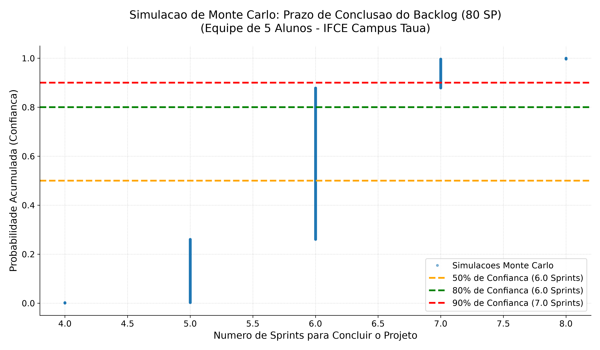

1. Do Product Backlog ao Sprint Backlog (Estudo de Caso: Gestão Escolar)
Na metodologia Scrum, a reunião de Sprint Planning seleciona as Histórias de Usuário prioritárias do Product Backlog, refina os critérios de aceite e estima a complexidade utilizando Planning Poker (escala de Fibonacci: 1, 2, 3, 5, 8, 13, 21) para compor a meta da Sprint.
Escopo Selecionado para a Sprint 1:
- Épico 1: Autenticação, Controle de Acesso (RBAC) e Gestão de Usuários.
- Épico 2: Cadastro de Alunos, Professores, Disciplinas e Turmas.
- Decomposição: Divisão de cada User Story em subtarefas de Back-End, Front-End, Banco de Dados e Testes (CSV importável para o ClickUp).
Previsão Probabilística com Monte Carlo:
- Substitui palpites determinísticos por 10.000 simulações estocásticas de vazão (throughput).
- Gera a curva ECDF (Função de Distribuição Acumulada Empírica), identificando os percentis de confiança P50, P85 (SLA recomendado) e P95.
2. Curva ECDF da Simulação de Monte Carlo e Código em Python

# Trecho de simulador_sprint.py - Simulação de Monte Carlo (10.000 iterações)
import numpy as np
np.random.seed(42)
n_simulacoes = 10000
tempos_totais = []
for _ in range(n_simulacoes):
# Sorteia o tempo de cada história com distribuição PERT/Triangular (Otimista, Provável, Pessimista)
tempo_sprint = sum(np.random.triangular(otimista, provavel, pessimista) for otimista, provavel, pessimista in tarefas)
tempos_totais.append(tempo_sprint)
p50, p85, p95 = np.percentile(tempos_totais, [50, 85, 95])
print(f"P50: {p50:.1f} dias | P85 (Recomendado): {p85:.1f} dias | P95: {p95:.1f} dias")